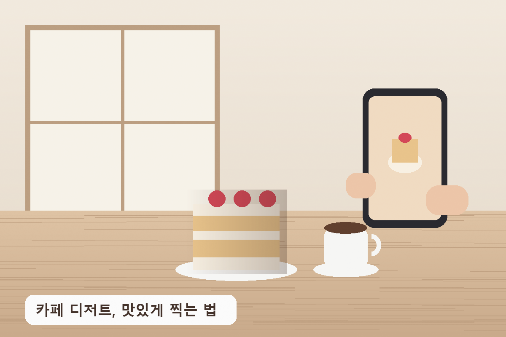
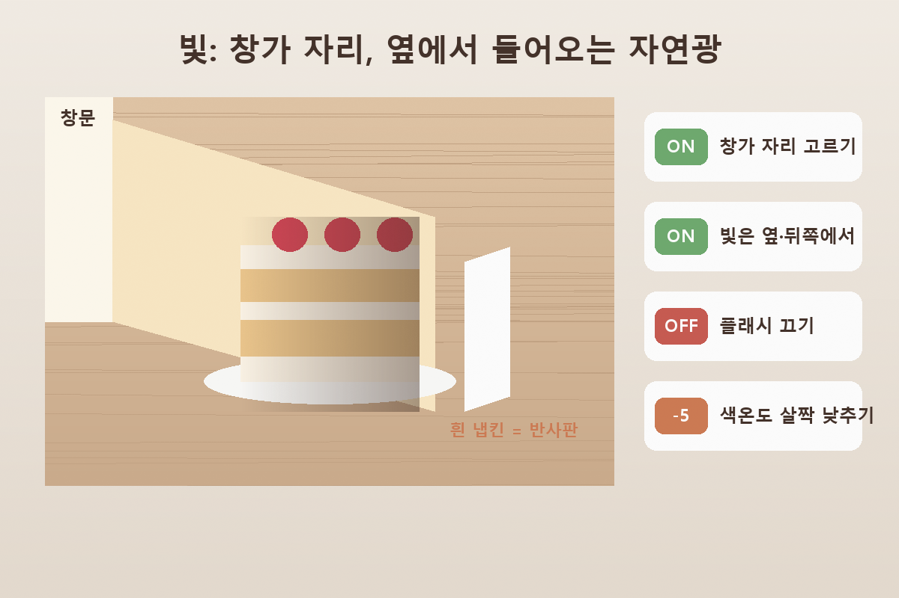
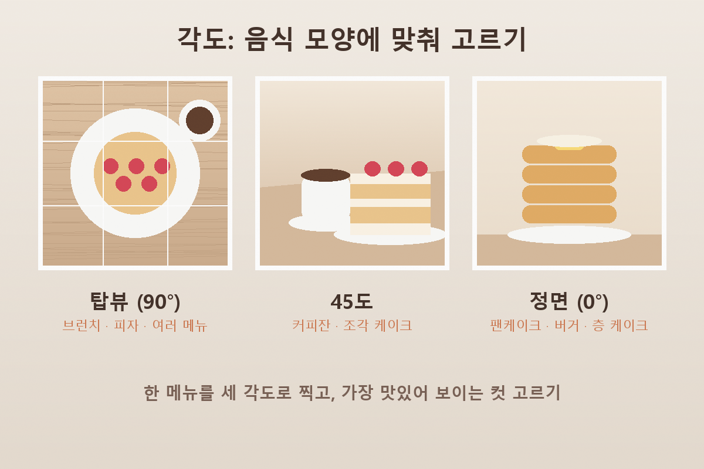
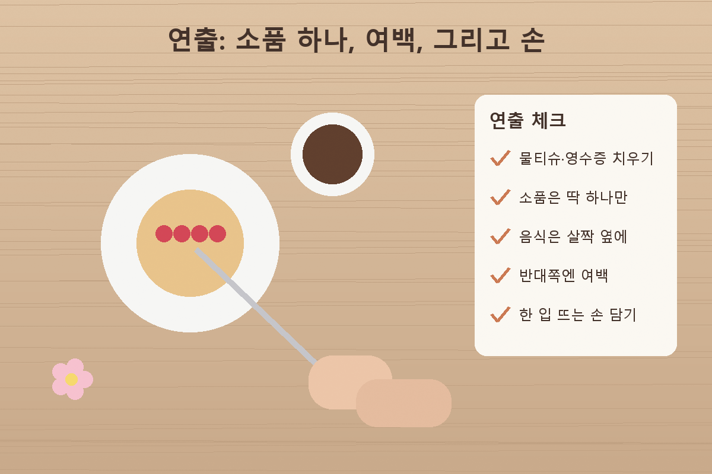
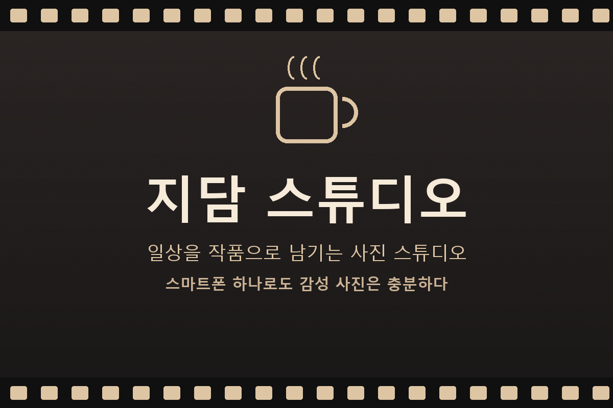

음식 사진 잘 찍는 법, 스마트폰으로 카페 디저트 맛있게 담는 3가지 요령

예쁜 카페에 가면 디저트가 나오자마자 휴대폰부터 꺼내게 되죠. 그런데 분명 눈으로 볼 때는 정말 맛있어 보였는데, 사진으로 보면 왠지 누렇고 밋밋하게 나와서 아쉬웠던 적 없으신가요? 요즘은 SNS에 올라오는 카페 사진이나 맛집 후기만 보고 가게를 고르는 분들도 많아서, 음식 사진 한 장의 힘이 생각보다 크답니다. 다행히 음식 사진은 사람이나 풍경보다 조건을 직접 조절하기 쉬워서, 몇 가지 요령만 알면 실력이 금방 늘어요. 접시를 조금 옮기고, 휴대폰 각도를 바꾸고, 소품 하나를 더하는 것만으로도 결과가 확 달라지거든요. 오늘은 스마트폰 하나로 카페 디저트를 맛있어 보이게 담는 세 가지 요령, 빛과 각도와 연출을 차례대로 알려드릴게요.
1. 빛: 창가 자리와 옆에서 들어오는 자연광

음식 사진의 맛을 결정하는 첫 번째는 빛이에요. 카페 천장의 노란 조명 아래에서 찍으면 음식이 누렇게 뜨고 그림자도 탁해지기 쉬워요. 그래서 가능하다면 처음부터 창가 자리를 고르는 게 가장 좋은 방법이에요. 이때 음식은 창문을 정면으로 마주 보게 두기보다, 빛이 옆이나 살짝 뒤쪽에서 들어오도록 놓아 주세요. 옆에서 들어오는 빛은 케이크의 층이나 빵의 결, 크림의 질감에 은은한 그림자를 만들어서 입체감을 살려 줘요. 반대로 휴대폰 플래시는 음식을 번들거리고 납작하게 만들기 때문에 꺼 두는 게 좋아요. 그림자가 너무 진하다면 흰 냅킨이나 메뉴판을 빛 반대편에 세워 보세요. 간단한 반사판 역할을 해서 어두운 쪽을 부드럽게 밝혀 줘요. 촬영 후 화이트밸런스나 색온도를 살짝 낮추면 누런 기운도 줄일 수 있어요.
2. 각도: 음식 모양에 맞춰 위, 45도, 정면 고르기

두 번째는 각도예요. 모든 음식을 같은 각도로 찍으면 오히려 매력이 사라져요. 음식의 모양에 따라 가장 예쁜 각도가 다르거든요. 피자나 브런치 접시, 여러 메뉴가 놓인 테이블처럼 위에서 봐야 전체 구성이 보이는 음식은 바로 위에서 수직으로 내려다보는 '탑뷰'가 좋아요. 이때 화면의 격자를 켜고 접시와 테이블 선을 반듯하게 맞추면 훨씬 깔끔해 보여요. 커피잔이나 조각 케이크처럼 높이와 옆면이 매력적인 음식은 사람이 앉아서 보는 눈높이와 비슷한 45도 각도가 가장 자연스럽고요. 여러 겹으로 쌓인 팬케이크나 버거, 층이 보이는 케이크는 테이블 높이까지 휴대폰을 낮춰 정면에서 찍으면 높이감이 살아나요. 한 메뉴를 세 각도로 모두 찍어 보고, 가장 맛있어 보이는 컷을 고르는 습관을 들여 보세요.
3. 연출: 소품 하나, 여백, 그리고 손의 등장

마지막은 연출이에요. 음식만 덩그러니 찍힌 사진보다 작은 이야기가 담긴 사진이 훨씬 오래 기억에 남아요. 먼저 화면 속 불필요한 물건부터 치워 주세요. 물티슈, 영수증, 휴대폰 같은 것들만 빠져도 사진이 확 정돈돼요. 그다음 음식과 어울리는 소품을 딱 하나만 더해 보세요. 디저트 옆의 커피잔, 포크, 작은 꽃이나 책 한 권 정도면 충분해요. 소품이 너무 많으면 주인공이 흐려지니 '하나만'이 원칙이에요. 음식을 화면 정중앙보다 살짝 옆에 두고 반대쪽에 여백을 남기면 잡지 같은 분위기가 나요. 여기에 포크로 케이크를 한 입 뜨는 손이나 잔을 드는 손을 함께 담으면, 사진에 움직임과 온기가 더해져서 보는 사람도 그 자리에 함께 있는 듯한 느낌을 받아요.

오늘 소개한 음식 사진 요령을 정리해 볼게요. 창가 자리에서 옆으로 들어오는 자연광을 활용하고 플래시는 끄기, 음식 모양에 맞춰 탑뷰와 45도와 정면 중 가장 예쁜 각도 고르기, 주변을 정리한 뒤 소품 하나와 여백, 손으로 이야기를 더하기. 이 세 가지만 기억해도 카페에서 찍는 사진이 눈에 띄게 달라질 거예요. 비싼 카메라나 조명이 없어도 괜찮아요. 스마트폰 하나로도 감성 사진은 충분하다는 것, 음식 사진에서도 똑같답니다. 지담 스튜디오도 촬영을 마치고 들른 카페에서 늘 이 순서대로 디저트를 찍어 보곤 해요. 여러분이 최근에 찍은 음식 사진 중 가장 마음에 드는 메뉴는 무엇인가요? 댓글로 들려주세요. 다음에는 여행지에서 바로 써먹는 사진 팁으로 찾아올게요. 이웃추가하고 함께해 주세요!